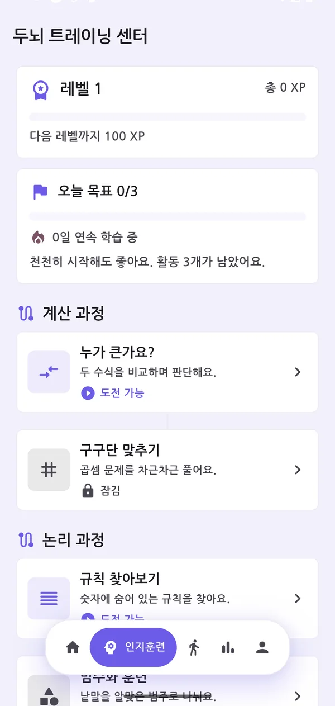
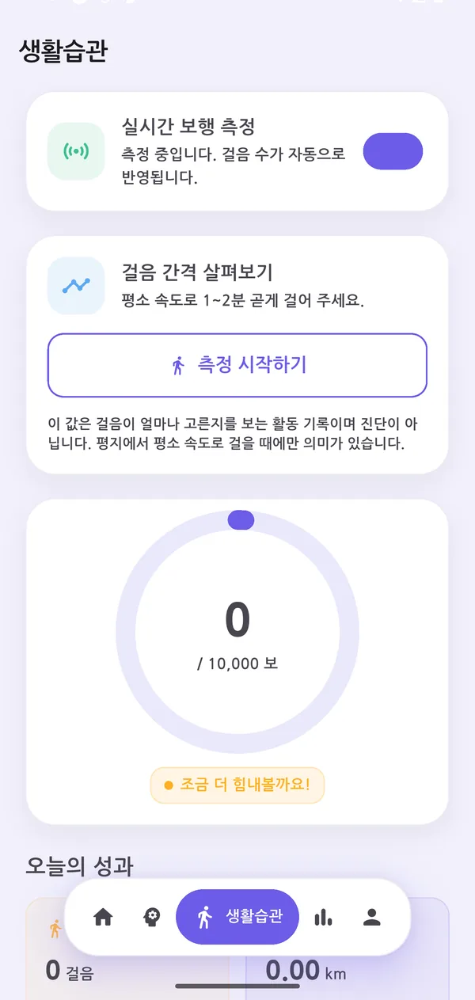
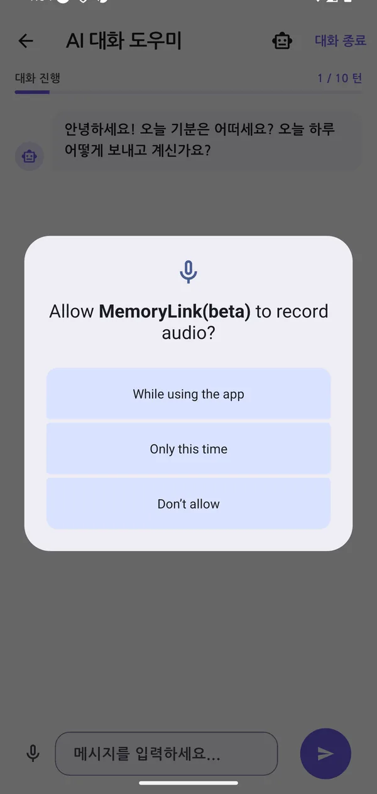

따로 놀던 기록을 하나의 흐름으로
인지 훈련만 있는 앱, 걸음 수만 세는 앱은 이미 많습니다. MemoryLink는 네 가지 생활 신호를 같은 화면에서 이어 붙여 "요즘 어떤지"를 한눈에 보이게 합니다.
매일 조금씩, 잠금이 풀리듯
계산·논리·기억·집중 네 영역을 다루는 훈련 7종. 난이도는 성적에 따라 자동으로 조정되고, 다음 단계는 앞 단계를 마쳐야 열립니다. 오늘 할 만큼만 하도록 목표는 하루 3개로 잡았습니다.

걸음과 수면이 인지 지표 옆에 놓입니다
걸음 수는 자동으로 세고, 수면·혈압·식이는 몇 번의 탭으로 남깁니다. 따로 보면 그냥 숫자지만, 인지 훈련 점수와 같은 화면에 놓이면 "잠을 못 잔 주에 점수가 어땠는지"가 보입니다.

시험이 아니라 대화입니다
"오늘 아침에 뭘 드셨어요?" 같은 물음으로 하루를 되짚습니다. 네트워크가 끊기거나 응답이 늦어도 대화는 끊기지 않습니다 — 온디바이스 모델과 규칙 기반 응답으로 세 겹의 대비책을 뒀습니다.

멀리 있어도, 오늘 어떤지 알 수 있게
매일 전화해 "밥은 드셨어요?"를 묻기는 어렵습니다. 보호자는 활동·인지 요약만 봅니다. 일기 원문이나 대화 내용은 넘어가지 않습니다.
요약만 공유
평상시에는 활동량과 인지 지표 요약만 보입니다. 기록의 원문은 기기를 떠나지 않습니다.
이상할 때만 더
활동량이 눈에 띄게 줄면 그때 상황 설명과 비상연락처가 함께 열립니다. 과잉 공개도, 과소 공개도 피합니다.
연결은 본인 손으로
보호자 화면은 암호학적 난수로 만든 링크로만 열립니다. 당사자가 연결을 끊으면 그 즉시 닫힙니다.
쓰는 사람을 기준으로 만든 화면
인지 저하 위험군은 곧 디지털 취약계층이기도 합니다. 앱의 진입 장벽 자체가 서비스 실패의 원인이 되기 때문에, 대비와 터치 타겟은 취향이 아니라 요건으로 다뤘습니다.
글자 크기 3단계
기본 · 크게 · 아주 크게. 안드로이드 접근성 설정으로 이미 키워 둔 배율을 앱이 되돌리지 않습니다.
WCAG AA 대비
본문 4.5:1, 조작 경계선 3:1을 넘깁니다. 색 값을 되돌리면 자동 테스트가 막습니다.
음성 안내와 진동
핵심 안내를 읽어 주고, 버튼 반응을 진동으로도 전합니다. 화면을 잘 못 보는 상황에 대비합니다.
56dp 터치 타겟
Material 권고는 48dp지만, 진전·관절 가동범위 저하를 기준으로 56dp를 하한으로 뒀습니다.
스크린리더 대응
훈련 7종의 화면 요소에 의미 라벨을 붙였습니다. 색으로만 전달하는 정보를 남기지 않습니다.
도움받을 곳 상시 안내
전국 치매안심센터 256곳을 앱 안에 담았습니다. 점수와 무관하게 언제든 찾아갈 수 있습니다.
하지 않기로 한 것이 더 중요합니다
인지 건강을 다루는 앱은 조금만 넘어가도 의료의 영역이 됩니다. 할 수 있는 것보다 하지 않기로 한 것을 먼저 정했습니다.
하지 않습니다
- 표준 검사 점수로 환산하지 않습니다. MMSE·MoCA·CIST와 등가라고 말하지 않습니다.
- "정상 / 치매 의심" 같은 판정을 내리지 않습니다.
- 검증되지 않은 측정값을 리포트나 보호자 화면에 흘리지 않습니다.
- 일기 원문과 대화 내용을 서버에 쌓지 않습니다.
대신 이렇게 합니다
- 앱 자체 기준의 인지활동 지수로 표시하고, 그 기준이 내부 기준임을 함께 적습니다.
- 판정 대신 변화의 방향을 보여 줍니다. 지난주 대비 어떤지가 핵심입니다.
- 면책 고지를 부록이 아니라 리포트 첫 장과 결과 화면에 놓습니다.
- 걱정되면 갈 곳을 알려 줍니다 — 치매안심센터와 진료과를 함께 안내합니다.
만듦새
접근성과 안전은 선언이 아니라 회귀를 막는 장치로 지킵니다. 아래 수치는 매 변경마다 자동으로 확인합니다.